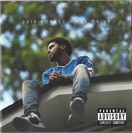

ABOUT
Jermaine Lamarr Cole (born January 28, 1985) is a German-born American rapper, singer, songwriter, and record producer. Born on a military base in Germany and raised in Fayetteville, North Carolina,[4] Cole initially gained recognition as a rapper following the release of his debut mixtape, The Come Up, in early 2007. Intent on further pursuing a musical career, he went on to release two additional mixtapes, The Warm Up (2009) and Friday Night Lights (2010) both to critical acclaim, after signing to Jay-Z's Roc Nation imprint in 2009. Cole released his debut studio album, Cole World: The Sideline Story, in 2011. It debuted at number one on the US Billboard 200.[5] His next album, Born Sinner (2013), also topped the Billboard 200. Moving into more conscious themes, 2014 Forest Hills Drive (2014) topped the Billboard 200 and earned Cole a Best Rap Album nomination at the 2015 Grammy Awards.[6] His jazz influenced fourth album, 4 Your Eyez Only (2016), debuted at number one on the Billboard 200.[7] Cole's fifth album, KOD (2018), became his fifth number-one album on the Billboard 200 and featured a then-record six simultaneous top 20 hits on the Billboard Hot 100, tying The Beatles.[8] Self-taught on piano, Cole also acts as a producer alongside his rap career, producing singles for artists such as Kendrick Lamar and Janet Jackson, as well as handling the majority of the production in his own projects.[9] He has also developed other ventures, including Dreamville Records, as well as a non-profit organization called the Dreamville Foundation.[10] Dreamville's compilation album Revenge of the Dreamers III (2019) debuted at number one on the Billboard 200 and was nominated for Best Rap Album at the 2020 Grammy Awards. In January 2015, Cole decided to house single mothers rent-free at his childhood home in Fayetteville, North Carolina.[11] Cole has won a Grammy Award for Best Rap Song, a Billboard Music Award for Top Rap Album, three Soul Train Music Awards, and 8 BET Hip Hop Awards. All five of his albums have been certified platinum by the Recording Industry Association of America (RIAA), as well as Revenge of the Dreamers III.